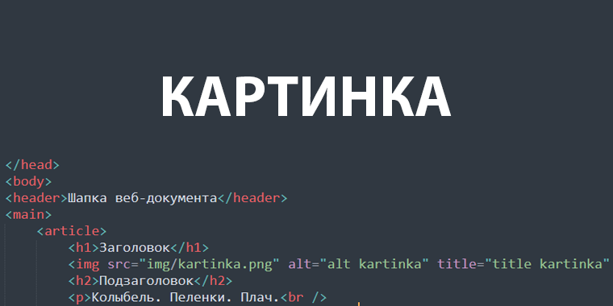

Заголовок
Подзаголовок
Колыбель. Пеленки. Плач.
Слово. Шаг. Простуда. Врач.
Беготня. Игрушки. Брат.
Двор. Качели. Детский сад.
Школа. Двойка. Тройка. Пять.
Мяч. Подножка. Гипс. Кровать.
Драка. Кровь. Разбитый нос.
Двор. Друзья. Тусовка. Форс.
Институт. Весна. Кусты.
Лето. Сессия. Хвосты.
Пиво. Водка. Джин со льдом.
Кофе. Сессия. Диплом.
Романтизм. Любовь. Звезда.
Руки. Губы. Ночь без сна.
Свадьба. Теща. Тесть. Капкан.
Ссора. Клуб. Друзья. Стакан.
Дом. Работа.
Дом. Семья.
Солнце. Лето.
Снег. Зима.
Сын. Пеленки. Колыбель.
Стресс. Любовница. Постель.
Бизнес. Деньги. План. Аврал.
Телевизор. Сериал.
Дача. Вишни. Кабачки.
Седина. Мигрень. Очки.
Внук. Пеленки. Колыбель.
Стресс. Давление. Постель.
Сердце. Почки. Кости. Врач.
Речи. Гроб. Прощание. Плач.
Вот такой получился стих.